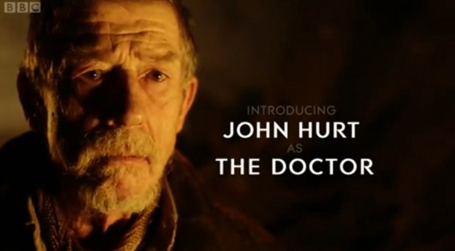
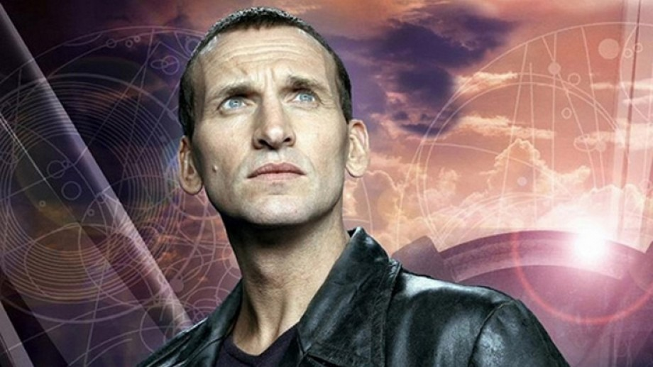
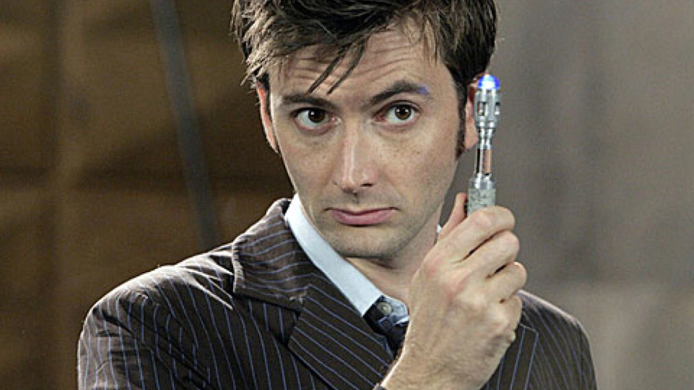
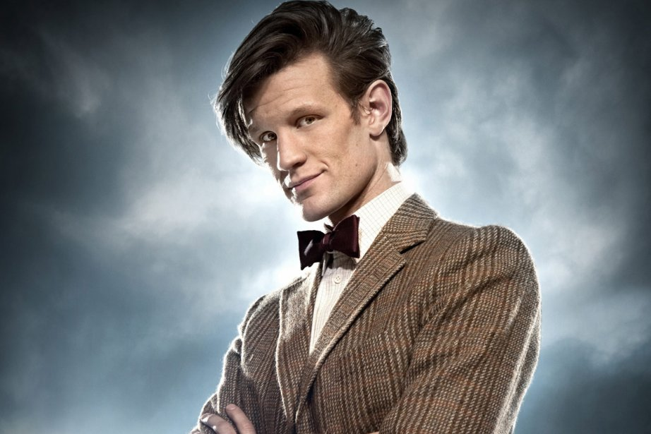
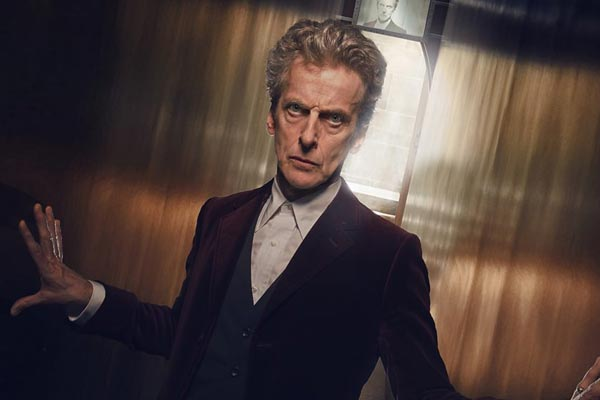
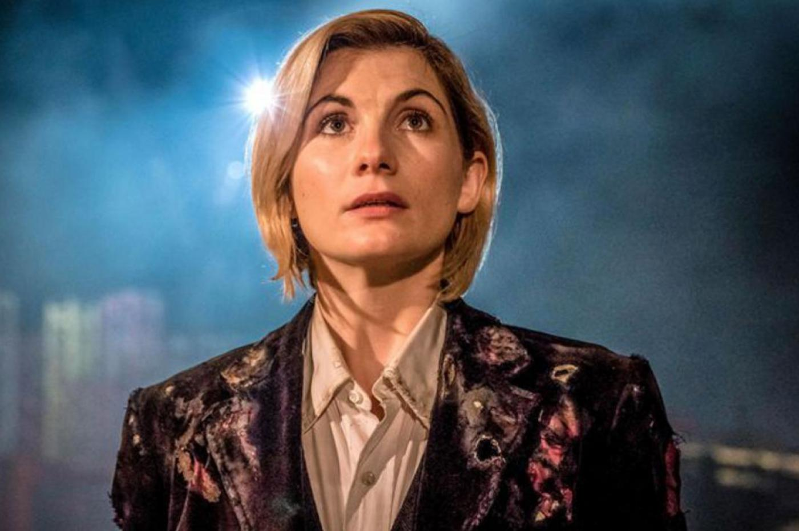

Voici un petit tableau récapitulatif des Docteurs de la nouvelle série depuis 2005:
| Identifiant du Docteur | Nom de l'acteur | Image |
|---|---|---|
| War Doctor | John Hurt |  |
| 9 | Christopher Eccleston |  |
| 10 | David Tennant |  |
| 11 | Matt Smith |  |
| 12 | Peter Capaldi |  |
| 13 | Jodie Whittaker |  |
| Pour aller plus loin: | Lien Wikipedia de Doctor Who | |